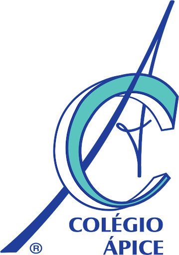

Ensino Fundamental e Ensino Médio - Colégio Ápice
- Tempo na Instituição: 11 anos (2007 - 2018)
- Cidade: Sorocaba/SP
- Atividades extracurriculares: Participei de uma equipe selecionada pela escola, a qual foi convocada para competir no Desafio da Bovespa na B3, e também, de uma competição de matemática na Universidade PUC-Campinas
Ensino Superior - Facens
- Tempo na Instituição: 2 anos e 9 meses (2019 - Atualmente)
- Cidade: Sorocaba/SP
- Atividades extracurriculares: Projeto desenvolvido, através do Smart Campus, sobre lixeiras inteligentes; Maratona de programação; Cursos na Udemy.